Time Domain Fixed Beamformer (TDFB)#
Introduction#
The beamformer is a pre-processing component for microphones. It improves microphone signal-to-noise capturing by providing spatial noise suppression for ambient noise. The non-correlated self-noise of the microphones and electronics can be mitigated by summing two or more microphones into an output channel stream.
The beamformer’s operation is easiest to understand with a delay-and-sum beamformer type for a line array shape. The microphones are assumed to be in far-field of the sound source. At a sufficient distance, the spherical waves such as from a person’s mouth appears as planar. The waves propagate at a slightly temperature-dependent speed of 340 m/s. The beamformer can sum the microphones outputs in-phase for the look direction. The direction is called the azimuth angle.
The beamformer can also, if desired, be set up to do the opposite to null the signal from a specified angle by delaying the signal for an opposite phase sum.
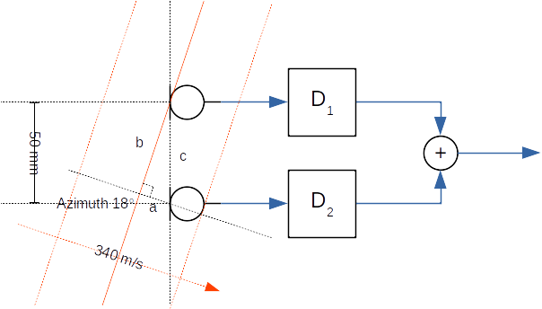
Figure 286 Example delay-and-sum beamformer with two microphones at a 50 mm distance. The sound waves arrive at an 18 degree azimuth angle.#
In the above example, the plane waves arrive from source at an 18 degrees azimuth angle versus the normal line array axis. The task is to determine the needed delay values for delay elements D1 and D2. Since the first microphone receives the wave before the second microphone, the signal from the first microphone must be delayed by D1 before the summing operation. The Delay value of D2 is set to zero.
The needed delay value is the sound propagation time equivalent length of edge a in the formed right triangle with edges a, b, and c. The lengths of the edges are time values that are computed from the microphone’s known distance, speed of sound, and azimuth angle.
The length of edge c is
\(t_c = \frac{d}{v} = \frac{50~mm}{340~m/s} \approx 147~us\)
The angle between edges a and c is 90 - az. Therefore, the arrival time difference ta to apply for D1 with an 18 degree steer angle (az) is
\(t_a = t_c \cos (90 - azimuth) \approx 45~us\)
The different az angles shows that the delay to apply varies between 0 (az = 0) and 147 us (az = 90). For negative azimuth angles, the applied delays for D1 and D2 are swapped.
Such a delay is typically applied by an all-pass digital filter. The beam patterns for line shape one-dimensional arrays have a rotational symmetrical beam pattern. In the above example with D1 and D2 set, the array would also pass the waveform from an 180 - az direction. The beam shape resembles a bent ellipse for broadside. A 3D cone-like beam pattern is possible only for end-fire angles of +90 or -90 degrees. A 2D array like a circular shape can provide a 360 degree steerable cone in an azimuth plane.
Analog directional microphones, such as a 3D cardioid shape for an end-fire angle, are actually single or dual diaphragm microphones with tuned acoustical ports or analog all-pass electronics that achieve similar additional delays for delay-and-sum. Due to their large mechanical size, they are common only in studio equipment. Consumer electronics such as notebooks form factors can fortunately provide various-shaped microphone arrays while the studio microphone-like approach is impossible.
Beamformer types#
Main beamformer types are fixed and adaptive. The implementations can be in time or frequency domain.
The fixed beamformer has a simple time domain with a pre-defined look angle (azimuth, elevation). The audio source is not tracked automatically. Audio waveforms from other angles are attenuated. The beam shape is not particularly narrow (with a low microphone count such as 2 -4) so there’s no need to track the subject; we automatically know the approximate angle for the use case.
Adaptive beamformers usually seek to minimize the output signal while unblocking the configured pass direction. This differs from the fixed beamformer, where the assumed or theoretical noise characteristic is pre-programmed. There is no delay to adapt (same performance from the beginning) or risk for mis-adaptation (desired signal corrupts), but the practical performance is somewhat limited in a theoretical noise field. The time domain implementation is low-latency with no added delay for signal framing for the transform domain. It can compute nearly any number of stream frames due to no block size constraints. The filter bank adds a small delay, such as 2 -10 ms, that depends on the configuration.
The fixed beamformer must be configured for every type of microphone array geometry. The beam can be steered by applying a new programming filter (with presets in a later version of TDFB) if the capture subject angle has changed based on camera face recognition or acoustical direction of the arrival estimation. Also, quick beam direction switching for some array geometries is also possible by rotating the input channels at the algorithm input.
Microphone array geometries#
Line#
In the line array, microphone locations form a straight line. As shown in the figure below, microphone numbers correspond to audio channels at the beamformer input. In stereo, audio channel 1 is the left channel.
The array size is described by microphones count and the space between two neighboring microphones. In the example below, the spacing of the four microphones is 30 mm. The steer azimuth angle is 90 degrees. The beam direction for positive angles (0 to 90) travels towards microphone 1. The beam direction towards the last microphone has a negative angle (0 to -90).
{kind=link}
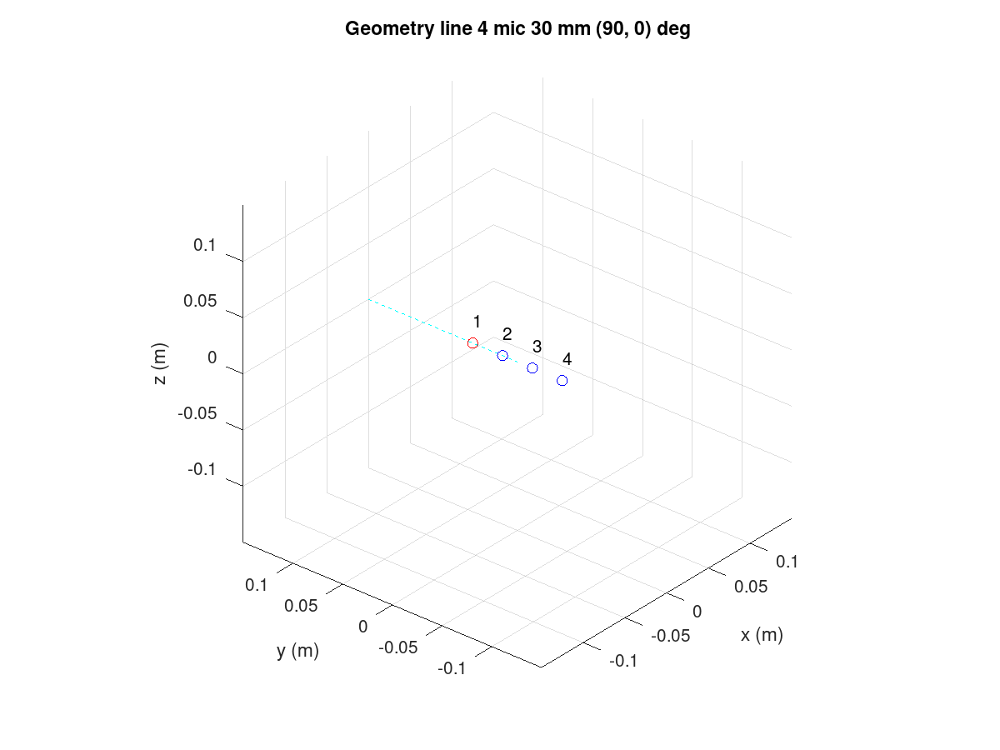
Figure 287 Line array with four microphones.#
The code to create the above design is below. The Octave GUI must
be started from the TDFB tune directory:
cd $SOF_WORKSPACE/sof/tools/tune/tdfb
octave --gui &
In the Octave shell, enter the following commands or create a short script
(such as ex_line.m) and run it. Remember to end each line with a
semicolon to avoid long prints of internal data structures.
bf = bf_defaults(); % Get defaults
bf.array = 'line'; % Calculate xyz coordinates for line array
bf.mic_n = 4; % four microphones
bf.mic_d = 30e-3; % 30 mm spacing
bf.steer_az = 90; % Azimuth angle 90 deg
bf = bf_design(bf);
The above design is simplified and lacks the output files definition; it assumes a default of four microphones to one output channel configuration but it creates the plots for geometry and theoretical characteristics.
Circular#
In the circular array, microphones are at an equal radius with equal angular spacing. The microphones are numbered counterclockwise when viewing the array from above (positive z-axis).
The azimuth angle (-180 to +180) is at 90 degrees in our example. A 0 degree angle points exactly towards microphone 1. The circular array is two-dimensional. If the elevation angle (-90 to 90 degrees) is set to a non-zero value, the look direction can be tilted up or down. A positive elevation angle tilts the beam upwards.
{kind=link}
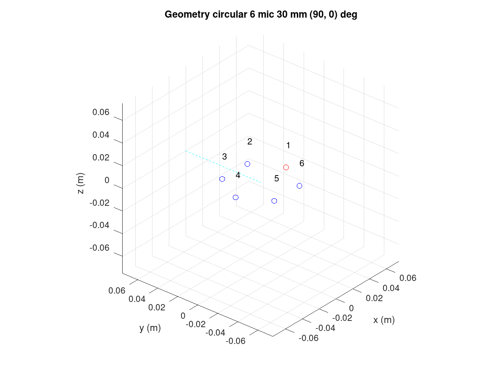
Figure 288 Circular array with six microphones.#
This design was created using commands, as shown below. The plot_box is optional; it only zooms the plot axis to a 150 mm wide cube.
bf = bf_defaults(); % Get defaults
bf.array = 'circular'; % Calculate xyz coordinates for line array
bf.mic_n = 6; % six microphones
bf.mic_r = 30e-3; % 30 mm radius
bf.steer_az = 90; % Azimuth angle 90 deg
bf.plot_box = 150e-3;
bf = bf_design(bf);
The view can be rotated as a normal 3D plot. In Matlab, mouse rotation is available. In Octave, the command view() can be used to view the array from another angle.
figure(1)
v = view()
view(130, 30)
The azimuth view was rotated by 180 degrees (-50 to +130). The view has no impact on the beamformer design.
Rectangular#
A rectangular array is shown below. The numbering of microphones for the first row is the same as for the line array. The number continues from the left-most microphone of the next row.
{kind=link}
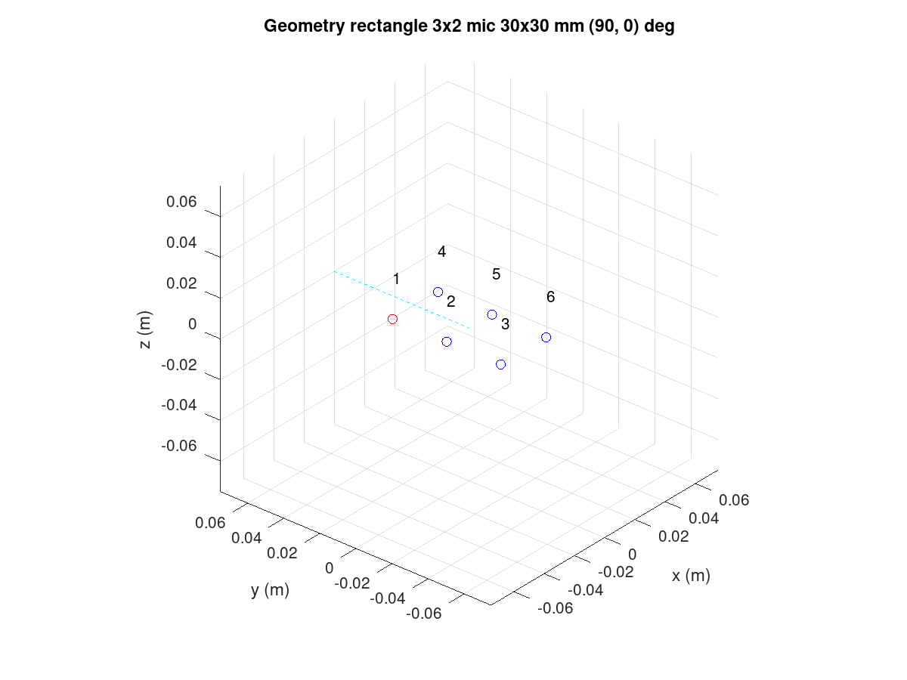
Figure 289 Rectangular array with six microphones.#
The code for the design is as follows:
bf = bf_defaults(); % Get defaults
bf.array = 'rectangle'; % Calculate xyz coordinates for rectangular array
bf.mic_nxy = [3 2]; % of 3 x 2
bf.mic_dxy = [30e-3 30e-3]; % Same x and y spacing
bf.plot_box = 150e-3;
bf = bf_design(bf);
L-shape#
The L-shape array is much like the rectangular array but only the left and bottom edge of the microphones rectangle is populated.
{kind=link}
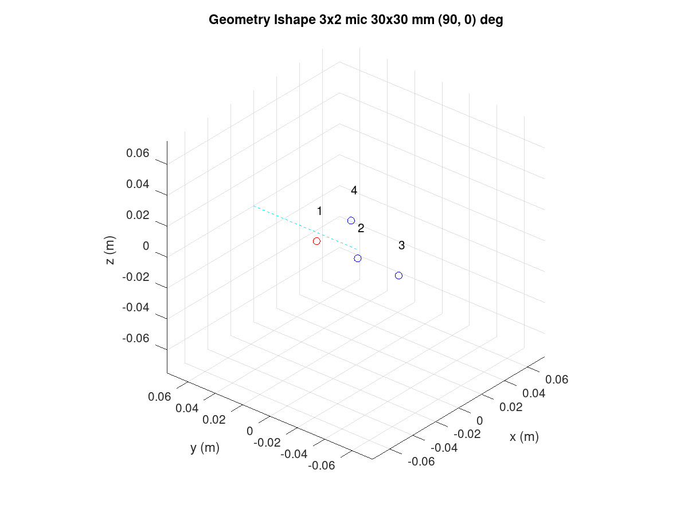
Figure 290 L-shape array with four microphones.#
It is produced by the following:
bf = bf_defaults(); % Get defaults
bf.array = 'lshape'; % Calculate xyz coordinates for rectangular array
bf.mic_nxy = [3 2]; % of 3 x 2
bf.mic_dxy = [30e-3 30e-3]; % Same x and y spacing
bf.steer_az = 90; % Azimuth angle 90 deg
bf.plot_box = 150e-3;
bf = bf_design(bf);
Arbitrary XYZ#
All microphone coordinates can be defined manually. The following example shows a tetrahedron shape with four microphones. The microphones order is as they are presented in the design script.
{kind=link}
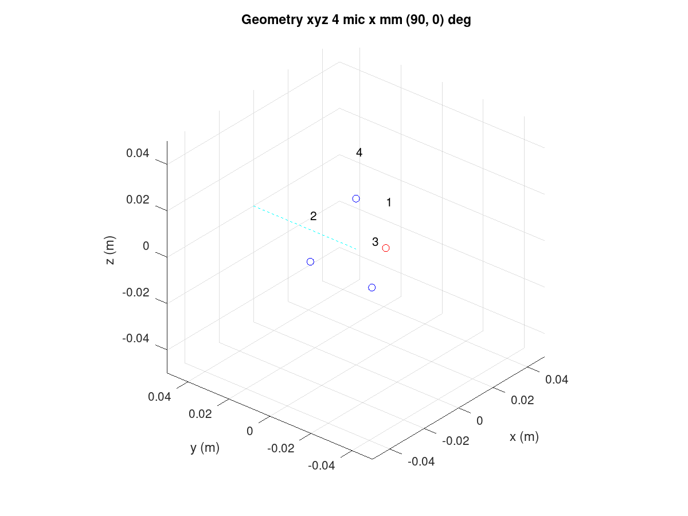
Figure 291 XYZ array with four microphones.#
The tetrahedron shape is made with the following script:
bf = bf_defaults(); % Get defaults
bf.array = 'xyz'; % Enter xyz directly, note that script centers it
bf.plot_box = 100e-3; % Small 100 mm plot box
bf.steer_az = 90; % Steer array to 90 deg azimuth
% Coordinates from https://en.wikipedia.org/wiki/Tetrahedron
s = 30e-3/sqrt(8/3); % Scale to 30 mm
bf.mic_x = [ sqrt(8/9) -sqrt(2/9) -sqrt(2/9) 0] * s;
bf.mic_y = [ 0 sqrt(2/3) -sqrt(2/3) 0] * s;
bf.mic_z = [-sqrt(1/3) -sqrt(1/3) -sqrt(1/3) 1] * s;
bf = bf_design(bf);
Note that the beamformer design is totally unaware of the surface effects of the object. The design equations assume that the microphones “float” in free space. Particularly, a 3D array will be impacted by device mechanics so custom design equations may be needed.
Rotation of the array#
Change the array orientation by changing the X, Y, and Z axis rotation
angle in the array_angle. The following example rotates the array like
it would be on a notebook display lid corner at a 60 degree angle. The steer
azimuth is set to 0 degrees towards the notebook user. The plot view angle
is changed also.
bf = bf_defaults(); % Get defaults
bf.array = 'lshape'; % Calculate xyz coordinates for rectangular array
bf.mic_nxy = [3 2]; % of 3 x 2
bf.mic_dxy = [30e-3 30e-3]; % Same x and y spacing
bf.steer_az = 0; % Azimuth angle 90 deg
bf.array_angle = [180 60 0]; % Array rotation angles for xyz
bf.plot_box = 150e-3;
bf = bf_design(bf);
figure(1)
view(140,30)
{kind=link}
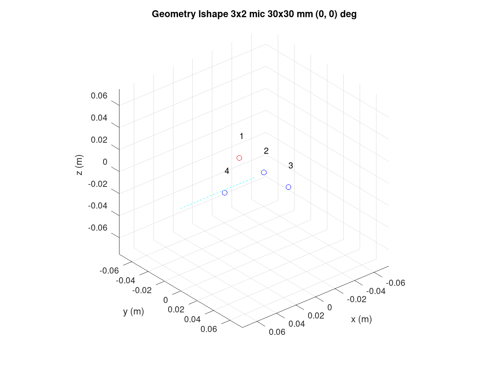
Figure 292 Rotated L-shape array.#
Filter bank design procedure#
Note
The following procedure is based on equations published in “Superdirective Microphone Arrays” by Joerg Bitzer and K. Uwe Simmer. It is available in book “Microphone Arrays” by Michael Brandstein and Darren Ward (Springer 2001).
The filter bank design procedure is located in the bf_design.m file.
Briefly, the design is done entirely in the FFT frequency domain with a
default of 512 bins. The conversion to a time domain FIR filter bank for the
desired filter length is done with an IFFT and kaiser window. The longer
the filters, the less they deviate from the super-directive frequency domain
design.
The procedure starts with computing the x, y, z coordinates of the
virtual sound source at the specified azimuth (steer_az) and elevation
(steer_el) angles. The point is by default 5m radius away which is
enough for far-field with planar sound waves that have typical array
dimensions but can be altered (steer_r). Near-field (less than
1m) design may suffer from a lack of sound level compensation for
microphone channels.
The noise field is assumed to be a theoretical homogeneous type; a
coherence matrix is formed with knowledge of the microphone’s
geometry. The super-directive design is a set of coefficients that
minimize the noise power spectral density of filtered and summed
microphone signals but provides a distortion-less response towards the
look direction. The used design equations compute a Minimum Variance
Distortion-less Response (MVDR) beamformer. The details are found in the
bf_design.m script and the above-mentioned book.
The elegance of the frequency domain design is that the equations can
be solved per each single frequency bin in the FFT domain. Since the
process is potentially numerically unstable, a diagonal loading factor is
added to the coherence matrix prior to inversion. The parameters is mu_db. It defaults to -50 dB but smaller or larger values can be tested for best
results. Smaller than default values need to be used with care. The self
noise of the microphones, via white noise gain (WNG), could even get boosted
with near zero diagonal load designs. Large diagonal load improves the
robustness of the design but may compromise other characteristic-like beam
patterns or diffuse noise field suppression.
After solving the equation for all frequencies, the filters for each microphone channel are converted to a time domain with IFFT and window function. The window function shortens the impulse responses to the desired length. The windowing naturally changes the characteristics so different filter lengths (fir_beta) should be tested.
Design examples#
Circular array#
In reference to the earlier circular array design example, note that the design creates several plot windows in addition to the geometry and steer direction plot. The following examples below show the beam pattern characteristics. The polar plot shows only frequencies 1, 2, 3, and 4 kHz. The colorful frequency vs. angle shows a more detailed view for the same but with all frequencies up to Nyquist Fs/2.
Notice that the beam patterns are different for different frequencies. A beamformer type exists for constant directivity but the performance against diffuse noise is not as good. The narrower beam towards higher frequencies in super-directive achieves the higher ambient noise suppression.
At frequencies above 5 kHz, side lobes pass the signal as well as the main beam. Those are caused by spatial aliasing. The wave length of audio gets smaller than the array microphones distance. The array dimensions must be decreased if spatial aliasing needs to be avoided. In most cases, some of it can be tolerated.
In the look direction beam, some attenuation exists at lowest and highest
frequencies. The response can be made more flat by increasing the filter
length from the default 64 (fir_length).
{kind=link}
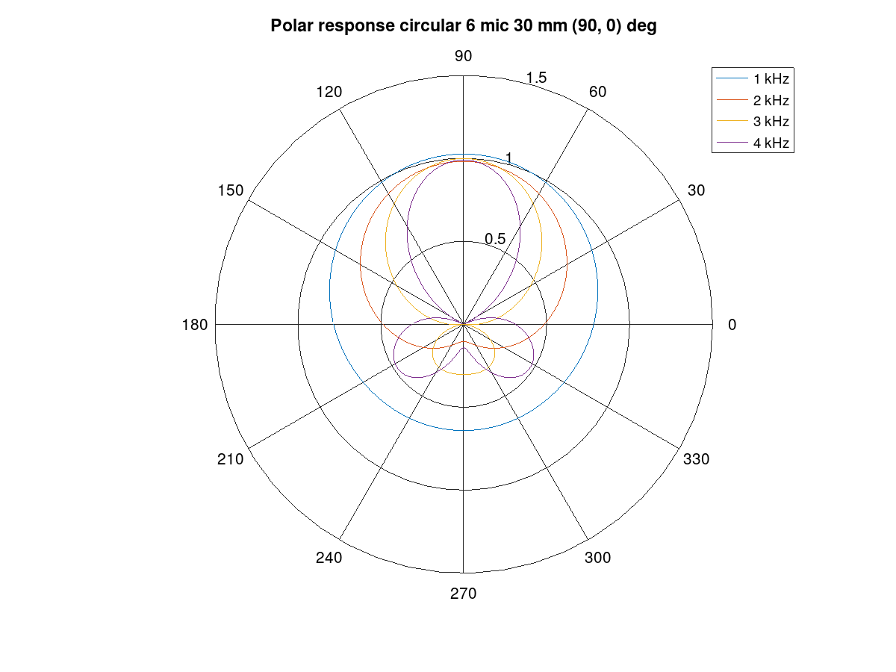
Figure 293 Polar response of the circular array.#
{kind=link}
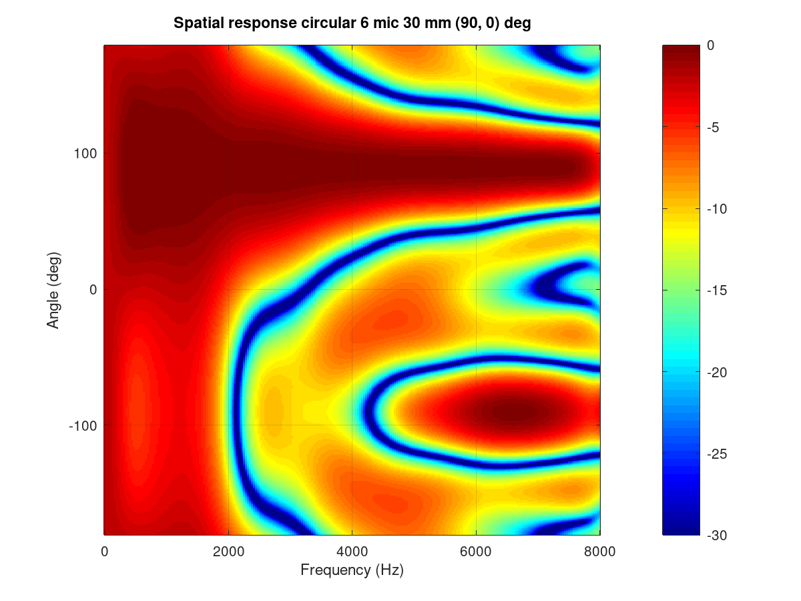
Figure 294 Frequency vs. angle response of the circular array.#
The performance of the array and beamformer can also be characterized with White Noise Gain (WNG) and Directivity Index (DI) plots. The WNG plot shows the amount of attenuation the design provides for uncorrelated noise. For example, self-noise of the microphones is an uncorrelated noise type. The directivity index shows the attenuation of noise that arrives from other directions than the steer direction. The noise that arrives from surrounding noise sources and reflects from walls and other surfaces and is correlated is called diffuse field noise.
The impact of diagonal load mu_db in an example range of -100 to -20 can
be tried and seen best in these plots. A near zero diagonal load with a
-200 dB value makes the directivity even negative at some frequencies. Such
beamformer design would boost noise at those frequencies!
{kind=link}
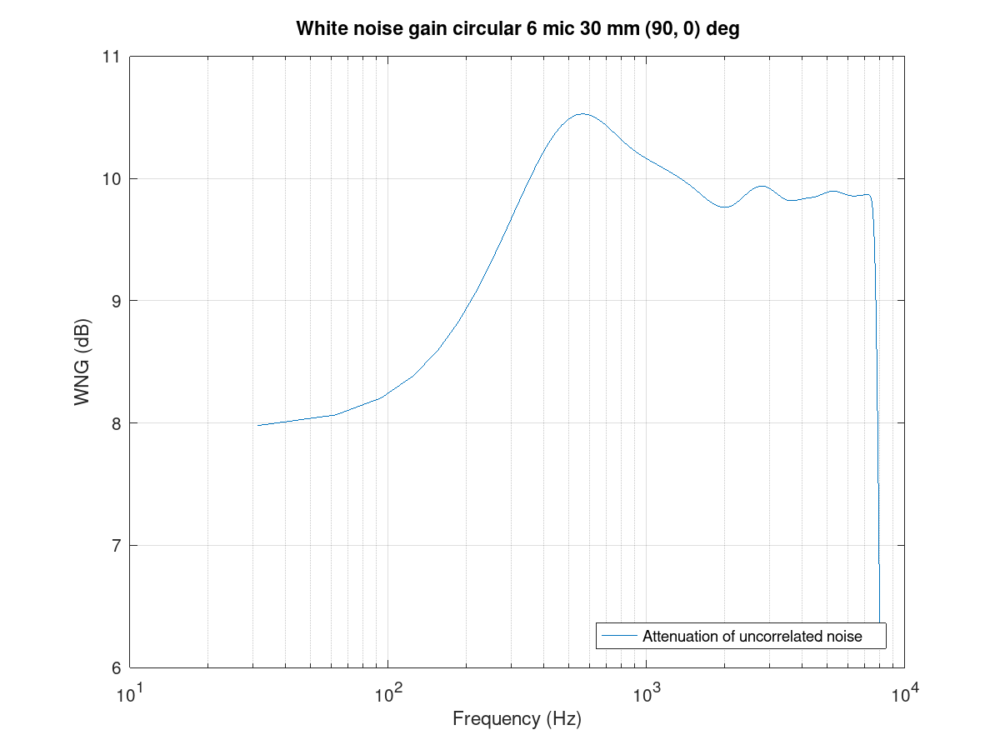
Figure 295 White noise gain of the circular array.#
{kind=link}
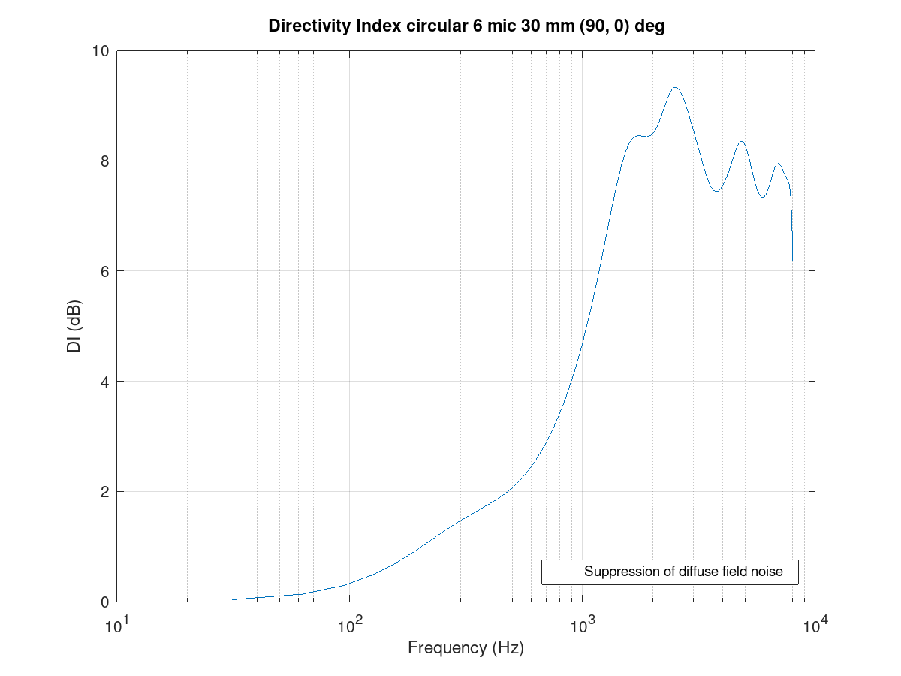
Figure 296 Directivity index of the circular array.#
Finally, the FIR coefficients plot can be checked for a sane-looking result. The plot below shows a typical symmetrical FIR impulse response.
{kind=link}
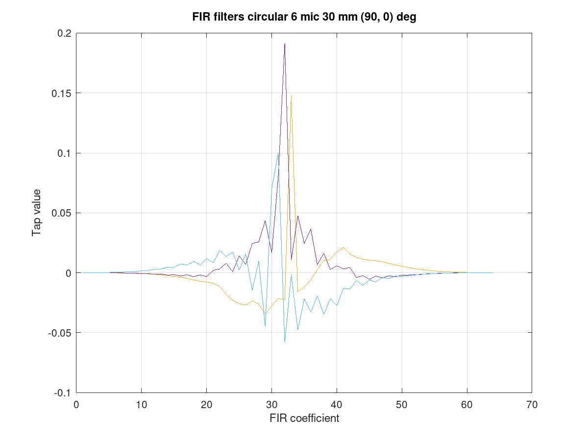
Figure 297 Filter coefficients for the circular array.#
Line array#
The circular arrays have nearly identical beam patterns in any direction. As an exercise, compare the beam patterns of a 4 mic line array to a 0 degrees azimuth steer vs. 90 or -90 degrees.
Limitations#
The above examples defaulted to N microphones to a single channel output. However, due to a current limitation in the SOF pipeline, the PCM and DAI must have the same word length. This limitation will be addressed in a future SOF release.
As a workaround, the beamformer can duplicate its output channel to the needed number of channels; there can also be several beams in the design for different output channels. The latter is actually preferred for the generic stereo capture PCM in typical notebooks. The typical array dimensions do not provide much subjective stereo sensation.
Dual mono example#
A complete dual mono 0 degree azimuth beamformer can be designed and
exported with a script. The beam characteristic is a 50 mm spaced pair but
the num_output_channels and output_channel_mix settings alter the
TDFB output mixer configuration.
bf = bf_defaults(); % Get defaults
bf.array = 'line'; % Calculate xyz coordinates for line array
bf.mic_n = 2; % two microphones
bf.mic_d = 50e-3; % 50 mm spacing
bf.fs = 16e3; % 16 kHz rate
bf.steer_az = 0; % 0 degree azimuth
% Two output channels
bf.num_output_channels = 2;
% Mix filter 1 output to channels 0 and 1 (2^0 + 2^1 = 3)
% Mix filter 2 output to channels 0 and 1 (2^0 + 2^1 = 3)
bf.output_channel_mix = [3 3];
bf = bf_filenames_helper(bf);
bf = bf_design(bf);
bf_export(bf);
Example with two beams#
The following example creates a -10 degree beam for the left channel and a +10 degree azimuth beam for the right channel. It’s quite suitable for notebooks with an emphasis on user direction (and opposite due to rotational symmetry of line array) and still have a noticeable channel separation.
The procedure uses bf_merge() to combine bf1 and bf2 designs. The
different out_channel_mix vectors sum the filters to the proper
channels. The filenames are redefined to avoid overwriting the single beam
files.
% Get defaults
bf1 = bf_defaults();
bf1.fs = 48e3;
% Setup array
bf1.array='line';
bf1.mic_n = 2;
bf1.mic_d = 50e-3;
% Copy settings for bf2
bf2 = bf1;
% Design beamformer 1 (left)
bf1.steer_az = -10;
bf1.input_channel_select = [0 1]; % Input two channels
bf1.output_channel_mix = [1 1]; % Mix both filters to channel 2^0
bf1.fn = 10; % Figs 10....
bf1 = bf_filenames_helper(bf1);
bf1 = bf_design(bf1);
% Design beamformer 2 (right)
bf2.steer_az = +10;
bf2.input_channel_select = [0 1]; % Input two channels
bf2.output_channel_mix = [2 2]; % Mix both filters to channel 2^1
bf2.fn = 20; % Figs 20....
bf2 = bf_filenames_helper(bf2);
bf2 = bf_design(bf2);
% Merge two beamformers into single description, set file names
bfm = bf_merge(bf1, bf2);
bfm.sofctl_fn = fullfile(bfm.sofctl_path, 'coef_line2_50mm_pm10deg_48khz.txt');
bfm.tplg_fn = fullfile(bfm.tplg_path, 'coef_line2_50mm_pm10deg_48khz.txt');
% Export files for topology and sof-ctl
bf_export(bfm);
{kind=link}
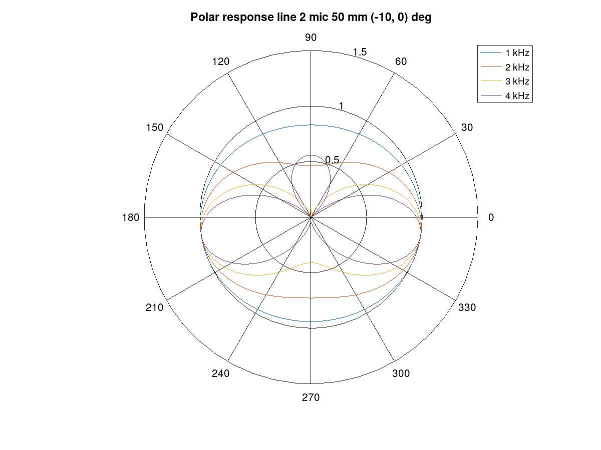
Figure 298 Beam pattern for the left channel.#
{kind=link}
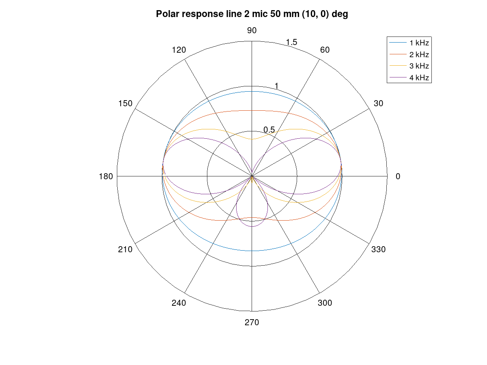
Figure 299 Beam pattern for the right channel.#
Simulation#
Measurement in an anechoic chamber is recommended for validation. A quick check, however, is available to validate the configuration blob and C code version TDFB operation.
The script tdbf_test.m performs a beam patten test. To test your own beamformer design, the proper file name must be edited to test-placback.m
(currently it is coef_line2_50mm_pm90deg_48khz.m4) and the test
topologies must be regenerated.
cd $SOF_WORKSPACE/sof/
scripts/build-tools.sh -t
scripts/rebuild-testbench.sh
cd cd tools/test/audio
octave --gui &
tdfb_test
This simulation is empirical and executed with testbench. The previous
bf_design() call for the array created the sine rotation, diffuse
field, and random field waveform data files that the simulation run
used. The theoretical and simulated beam patterns should match.